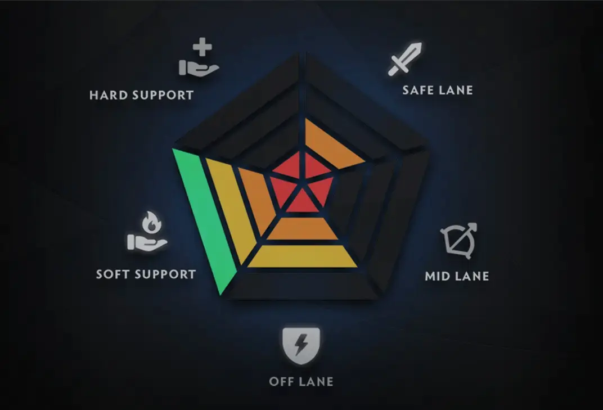

Лінії
Safe: фарм і безпека для carry.
Mid: руни, темп, ротації.
Offlane: тиск і створення простору.
Позиції
Pos 1: carry — сила у лейті.
Pos 2: mid — темп і контроль.
Pos 3: offlane — ініціація і фронт.
Pos 4–5: supports — бачення і сейви.
